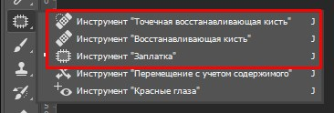
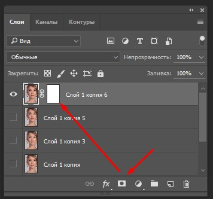

Инструменты для портретной ретуши в Photoshop
На примере одного портрета покажу работу базовых инструментов для ретуши в фотошопе. Скажу честно, не каждую фотографию я ретуширую всем боевым комплектом. Все зависит. Например, сделали фото в яркий солнечный день. И картинка нравится. Но из-за жесткого света на лице морщинки стали более выраженными. Конечно, лучше при съемке получить рассеянный свет с помощью отражателя или дождаться более приятного естественного освещения. Но бывает, кадр так нравится, что можно провести чуть больше времени в фотошопе. Сегодня займемся именно этим.
Исходное изображение
до и после
Нажмите на кнопку, чтобы увидеть фотографию ДО обработки и ПОСЛЕ
На самом деле, большого объема работы не будет. Красивая девушка с потрясающей формой глаз. Нам необходимо только убрать маленькие недостатки на коже, совсем чуть-чуть подкорректировать морщинки. Без фанатизма. Никаких восковых лиц. Максимально естественно и натурально. Да, еще справа на плече у модели тень, ее "пошопим". Лишние бесстыжие волоски в этом случае убирать не будем. Пусть останется некий налет небрежности.
Базовый комплект инструментов вызывается командой shift + J. В этой линейке я использую первые три инструмента. Начинаю ретушь всегда с "точечной востанавливающей кисти". Она автоматически заменяет выделенную область на одну из ближайших. Такой кистью хорошо убирать пигментные пятна, прыщики, родинки и другие маленькие "точечные" объекты. И пользуюсь я ей без лишних линий и штрихов. Диаметр кисти выбираю максимально близкий к диаметру объекта.
На фото ниже все недостатки скрыты с помощью этой востанавливающей кисти.
до и после
Нажмите на кнопку, чтобы увидеть фотографию ДО обработки и ПОСЛЕ
К сожалению, с этой кистью бывают промахи. Не всегда удачно она подставляет текстуру соседних участков. Если я замечаю, что текстура/цвет сильно отличается от того, что мне нужно, я меняю кисть на "восстанавливающую" (вторая в наборе). С помощью нее можно принудительно выбрать участок кожи (удерживая кнопку alt). Востанавливающую кисть я также использую точечно.
Следующая кисть "заплатка" по праву может называться волшебной палочкой. Она и морщинки уберет и, например, носогубные складки сделает менее заметными. Этот инструмент я сначала недооценила. А возможно, в старых версиях фотошопа он работал не так, как хотелось бы. В общем, незаменимой заплатка стала в версиях СС. Этим инструментом я даже небольшие дефекты студийного фона убираю (вместо инструмента "штамп"). В данном случае скрываем небольшие морщинки под глазами. Не советую затирать все морщины, лицо станет неестественным. А нам всего лишь нужно замаскировать недостатки, а не сотворить куклу. Носогубные скадки можно чуть высветлить (осветляющей кистью с прозрачностью 10-15%) или по контуру пройтись заплаткой. Я использовала второй способ, самые темные участки выделила, за образец взяла соседние (чуть светлее) участки кожи рядом со складкой. Смотрим результат работы инструмента ниже на фото.
до и после
Нажмите на кнопку, чтобы увидеть фотографию ДО обработки и ПОСЛЕ
Следующий пункт необязательный. Я хочу сгладить текстуру кожи. Это можно сделать несколькими способами. Стандартный из коробки: 1. Создадим копию слоя 2. К верхнему слою применим фильтр "размытие по Гауссу"" с небольшим радиусом. 3. Оставляем размытие только на участках кожи (избегая области губ, глаз, волос). Затереть ненужные участки можно с помощью инструмента "ластик". Но лучше воспользоваться слоем-маской. При активном верхнем слое нажимаем на панели слоев "добавить векторную маску". Выбираем инструмент "кисть" с основным черным цветом. И проводим по "корректирующему" слою в тех местах, где хотим удалить размытие. Этот способ предпочтительнее в случаях, когда Вы долго и усердно что-то редактируете, а потом хотите исправить, а "история" не позволяет вернуться так далеко назад, корректирующий слой помогает исправить изменения (нужно только воспользоваться ластиком вместо кисти на том же корректирующем слое). 3. На участки кожи с размытием применяем фильтр "шум" с небольшим значением (если Вы использовали слой-маску, не забудьте применить фильтр на основном слое,вместо корректирующего). Этот пункт применяем, если размытие съело текстуру кожи. В противном случае, можно обойтись без дополнительных манипуляций.
Также существуют различные плагины для "сглаживания" кожи. По моему мнению, один из лучших представителей этого класса - "Portraiture". Ощутимо ускоряет и облегчает работу. Но он стоит денег.
С этим эффектом легко перебрать. Я предпочитаю в большинстве случаев его вообще не использовать, нежели случайно создать излишне "замыленную" кожу. На фото ниже Вы видите пример сглаживания текстуры кожи.
до и после
Нажмите на кнопку, чтобы увидеть фотографию ДО обработки и ПОСЛЕ
Также, после ретуши портрета можно подчеркнуть выразительные глаза. Техника заключается в том, чтобы совсем чуть-чуть высветлить белок глаза, затронув слизистую. Зрачок по краю затемнить. Отполировать инструментом "резкость". Этим трюком я пользуюсь крайне редко и осторожно. Экспонирование кисти во всех случаях ставлю не более 20%, диапозон "средние тона". Диаметр подбираю исходя из площади осветления/затемнения. На фото ниже результат этих манипуляций.
до и после
Нажмите на кнопку, чтобы увидеть фотографию ДО обработки и ПОСЛЕ
И в завершение, убираем тень на плече у модели (на фото справа). Можно справиться "штампом", осветляющей кистью, одной из востанавливающех кистей но, с осторожностью. А я решила воспользоваться инструментом "заплаткой". И финальное фото:
до и после
Нажмите на кнопку, чтобы увидеть фотографию ДО обработки и ПОСЛЕ
Для портретной ретуши достаточно будет вышеперечисленных инструментов, без использования сторонних плагинов. Главное в ретуши - это знать меру!
Опубликовано: